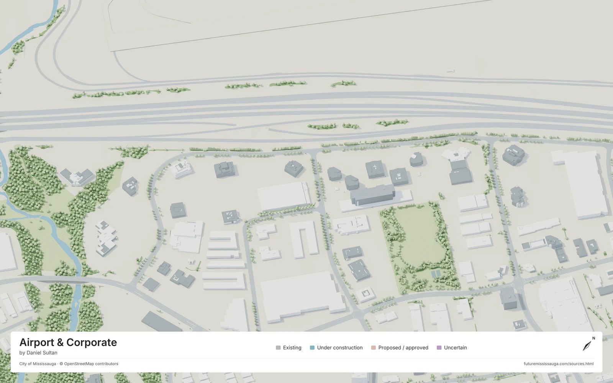

Skip to content
Future Mississauga
Neighbourhoods
Buildings
Compare
Gallery
Updates
Downloads
Sources
Contact
3D map
Menu
←
Neighbourhoods
Airport & Corporate
Open 3D map
→

With proposed projects
Atlas, page 51 →